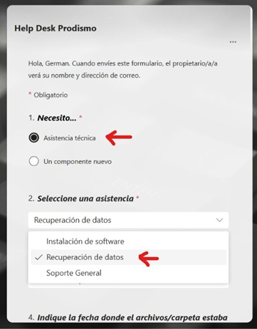
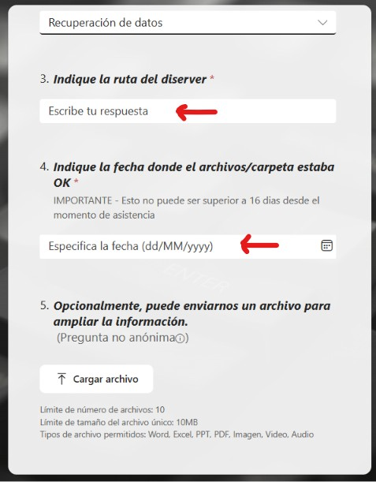
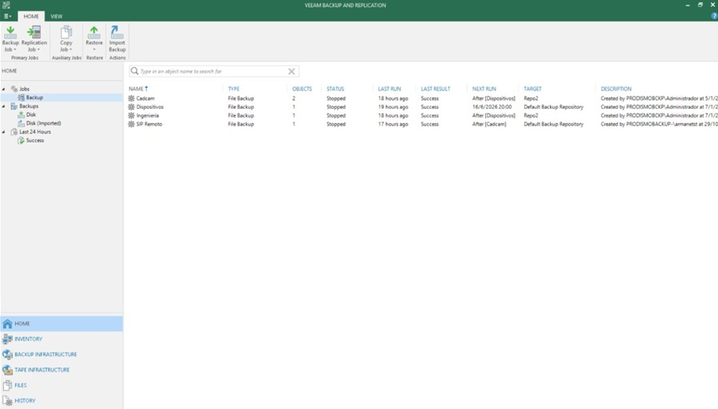
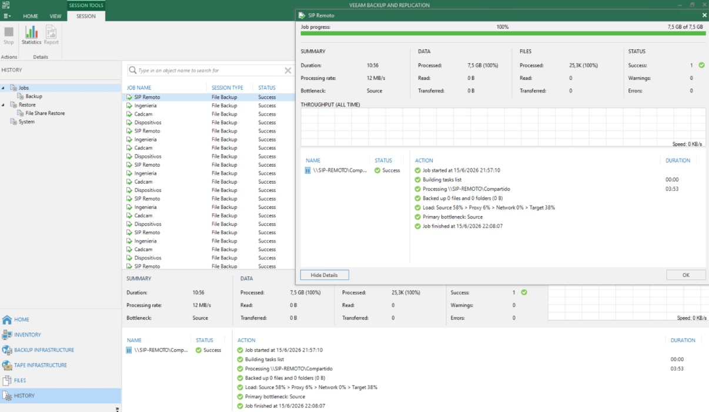

Procedimiento de Copias de Seguridad NUEVA
1 OBJETIVO
Establecer un proceso estructurado para la realización, protección, almacenamiento y recuperación de las copias de seguridad de la información, el software y los sistemas de PRODISMO SRL. Este procedimiento define las acciones para garantizar la disponibilidad y recuperabilidad de los datos críticos ante pérdida, corrupción o desastre, cumpliendo con el control A.8.13 (Copia de seguridad de la información) de ISO/IEC 27001:2022 y los requisitos de continuidad del marco TISAX.
2 RESPONSABLES
2.1 Equipo de Gestión de Copias de Seguridad
| Rol | Responsabilidades | Miembros |
|---|---|---|
| Supervisor de Copias de Seguridad | Supervisar la ejecución diaria de los backups, revisar logs de error, gestionar la capacidad de almacenamiento y coordinar las pruebas de recuperación. | IT Manager / RSI |
| Administrador de Infraestructura | Configurar y mantener las herramientas de backup (software y hardware) y administrar los backups en la nube (Ej. Azure Backup). | DIT / Proveedores |
| Responsable de Seguridad de la Información (RSI) | Revisar la política y el procedimiento de backups, validar el cumplimiento de RPO/RTO, y auditar la efectividad de las pruebas de recuperación. | RSI |
| Líder de Recuperación | Ejecutar los procedimientos de restauración de datos durante un incidente de pérdida de información o desastre. | DIT |
3 CLASIFICACIÓN DE SISTEMAS Y DATOS
3.1. Estrategias de Respaldo por Nivel de Criticidad (basado en BIA) de Seguridad
| Calsificación | RTO | RPO | Frecuencia | Tipo de Backup | Ejemplo |
|---|---|---|---|---|---|
| Crítico | < 30 min | < 4 horas | Diario | Completo + Incrementales diarios | Servidor de Archivos (Diseño 3D) |
| Alto | < 4 horas | 12-24 horas | Diario | Completo semanal + Incrementales diarios | SharePoint (documentación crítica), Correo Electrónico |
| Medio | < 24 horas | 24-48 horas | Semanal | Completo semanal | App Viajes |
| Bajo | < 48 horas | < 72 horas | Mensual | Completo mensual | Sistemas de Gestión Documental, Estaciones de trabajo (datos de usuario en perfil de red) |
4 PROCESO DE GESTIÓN DE COPIAS DE SEGURIDAD
4.1 Fase 1: Programación y Ejecución
- Planificación: El Supervisor de Copias de Seguridad define y configura las tareas automáticas de backup en la herramienta Veeam Backup & Replication Shell según la estrategia definida en el punto 5.1.
- Ejecución Automática: Las copias se ejecutan según la ventana de backup programada (generalmente en horario de baja actividad). Se prioriza la no afectación del rendimiento de los sistemas productivos.
- Verificación Automática: La herramienta de backup debe generar informes de éxito/fallo. Se configurarán alertas automáticas para notificar fallos al Departamento de IT.
4.2 Fase 2: Protección y Almacenamiento
- Ubicación Remota Segura: Al menos una copia de los sistemas críticos debe almacenarse en una ubicación geográficamente separada (ej. nube pública Azure, o centro de datos alterno de Armanet).
- Cifrado: Todas las copias de seguridad que contengan información confidencial o personal (datos de clientes, RRHH, propiedad intelectual) deben ser cifradas, tanto en tránsito como en reposo.
- Inmutabilidad: Los backups de sistemas Críticos y Altos deben configurarse como "inmutables" durante su período de retención para protegerlos contra ransomware.
- Control de Acceso: El acceso a los repositorios de backups debe estar estrictamente limitado al personal autorizado del DIT y/o el proveedor designado (Ej. Armanet, Enter Gestión).
4.3 Fase 3: Retención y Rotación
- Períodos de retención:
- Backups Diarios/Incrementales: 2 semanas.
- Backups Semanales: 1 mes.
- Backups Mensuales: 3 a 6 meses.
- Backups Anuales: 1 año (o según requisitos legales específicos).
- Política de Rotación: Se seguirá el esquema GFS (Grandfather-Father-Son) para gestionar el ciclo de vida de los snapshots en disco/nube, asegurando la disponibilidad de puntos de recuperación históricos sin un crecimiento infinito del almacenamiento.
- Eliminación Segura: Al finalizar el período de retención, los soportes que contengan información confidencial deberán ser destruidos de forma segura o, en el caso de archivos digitales, sobrescritos y eliminados de manera que no puedan ser recuperados.
5 PROCESO DE RECUPERACIÓN DE DATOS
5.1 Fase 1: Solicitud y Autorización
- Recepción de Solicitud: El usuario, o el responsable del sistema, reporta la necesidad de restaurar datos (pérdida accidental, corrupción de archivo, etc.) mediante el sistema de tickets.
- Validación: El Departamento de IT verifica la solicitud.
- Solicitud de recuperación:
-
Para la recuperación de archivos o carpetas borradas accidentalmente del
Servidor de Diseños y documentación (diserver/dbComercial),
se utiliza el siguiente formulario:
TICKET SOPORTE

- Para la recuperación de registros del Sistema SIP/SIP4.0, se envía al mail: soporte.entergestion@gmail.com
-
Para la recuperación de archivos o carpetas borradas accidentalmente del
Servidor de Diseños y documentación (diserver/dbComercial),
se utiliza el siguiente formulario:
- Registro: La solicitud en el STI, será el registro formal de la solicitud de recuperación.
5.2 Fase 2: Ejecución de la Recuperación
- Identificación del Backup: Localizar el conjunto de backups (fecha/hora) que contienen los datos a restaurar, cumpliendo con el RPO requerido.
- Selección de Método: Elegir el tipo de restauración (archivo/carpeta individual, base de datos completa, etc.).
- Restauración en Producción: Ejecutar la restauración de los datos en la ubicación de destino.
- Verificación de Integridad: El solicitante y el equipo de IT deben verificar que los datos restaurados son legibles, completos y funcionales.
Video Recuperación Datos Server
Video Recuperación Archivos/Carpetas Server
5.3 Fase 3: Cierre y Documentación
- Documentación: Registrar la acción en el Registro de Acciones de Recuperación, incluyendo fecha, hora, sistema, responsable, motivo y resultado.
- Cierre del Ticket: Actualizar el ticket de solicitud y notificar al usuario final.
6 PRUEBAS DE RECUPERACIÓN
6.1 Programa de Pruebas
- Pruebas Mensuales: Restauración de archivos/carpetas individuales de sistemas Críticos para verificar la integridad de los datos.
- Pruebas Trimestrales: Restauración completa de una máquina virtual o base de datos de un sistema Alto en un entorno de pruebas aislado.
- Pruebas Semestrales:Prueba de recuperación completa de un sistema Críticos (ej. ERP) en un entorno de contingencia, simulando la pérdida total del sistema productivo.
- Pruebas Anuales: Ejercicio integral que incluya la recuperación de múltiples sistemas.
6.2 Documentación de Pruebas
- Cada prueba deberá documentarse en el Anexo A (Resultados de
Pruebas de Recuperación), incluyendo:
- Sistema probado y fecha
- Tipo de prueba (archivo, VM, BBDD).
- RPO y RTO objetivo vs. real.
- Resultados y desviaciones.
- Lecciones aprendidas y acciones de mejora.
7 REGISTROS Y DOCUMENTACIÓN
7.1 Registros Obligatorios
- Logs de Ejecución de Backups: Histórico de todas las tareas de
backup, disponible en la herramienta.

- Anexo A: Registro de Copias de Seguridad y Retención: Inventario de los conjuntos de backups y su período de retención.
- Solicitudes de Restauración: Tickets o formularios que justifican la recuperación de datos.
7.2 Retención de Documentación
- Logs de ejecución y resultados de pruebas: 2 años.
- Registro de solicitudes de restauración: 1 año.
- Evidencias de pruebas de recuperación: Hasta la siguiente prueba exitosa del mismo sistema.
8 ANEXOS
- Anexo B: I529-IT-1 Instructivo de Restauración de Copias de Seguridad
[Formulario para solicitud de recuperación de información]
9 REVISIONES DEL DOCUMENTO
- • Revisión anual y después de cada cambio significativo en la infraestructura, tras una falla crítica de backup o después de una recuperación mayor.
| Rev. N° | Fecha | Descripción |
|---|---|---|
| 0 | 12/3/2026 | Primera Emisión del documento |
| 1 | 9/6/2026 | Actualización del procedimiento Ticket a Soporte |